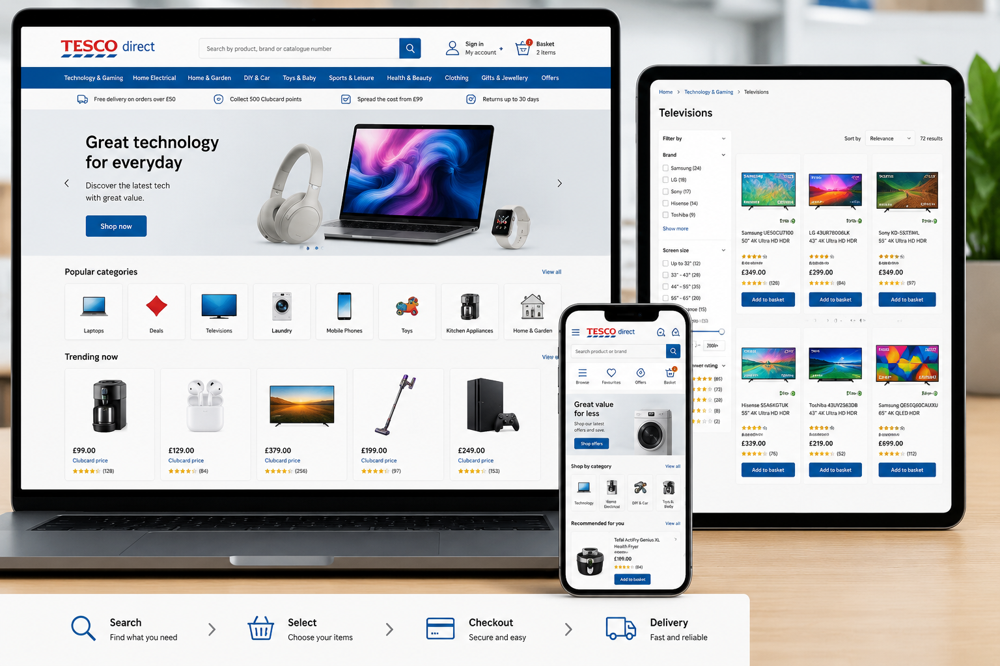

Tesco Direct
Senior UI Consultant & UX Architect
Tesco engaged me to work on the Tesco Direct e-commerce platform, enhancing existing functionality and supporting the introduction of product variants across key areas of the website. The assignment combined front-end development, user experience improvements and technical consultancy within one of the UK's largest online retail environments.

Project Details
- Client / Organisation
- Tesco Direct
- Date
- August 2012 – October 2012
- Role
- Senior UI Consultant & UX Architect
- Project Focus
- ME-commerce enhancement, product catalogue development, user experience optimisation and front-end architecture.
- Technical Environment
- HTML5, CSS3, JavaScript, jQuery, AJAX, QUnit, Agile Delivery and Front-End Development.
Project Focus
The project focused on extending the Tesco Direct e-commerce platform to support product variants across product listing and product detail pages. This functionality enabled customers to select and compare different versions of products more effectively, improving both the shopping experience and the flexibility of the underlying catalogue structure.
Having previously contributed to the original proof of concept for the platform during my time at Conchango, I returned several years later as a contractor to help enhance the live solution. In addition to delivering new functionality, I was asked to review existing front-end processes and recommend improvements to development practices and supporting technologies.
My Contribution
As Senior UI Consultant and UX Architect, I worked closely with product owners, developers and stakeholders to design and implement new functionality while ensuring a high-quality customer experience across the platform. My role combined hands-on front-end development with technical consultancy and process improvement activities.
Main contributions included:
- UX architecture and interface enhancement
- Product variant functionality design and implementation
- Product listing and product detail page improvements
- Front-end HTML, CSS and JavaScript development
- User journey and shopping experience optimisation
- Technical review of front-end working practices
- Recommendations for improved development processes
- Introduction of front-end best practices and standards
- Investigation of JavaScript unit testing approaches
- Collaboration with Agile delivery teams and stakeholders
Technical Environment
The platform utilised HTML, CSS, JavaScript, jQuery and AJAX technologies to support a large-scale retail environment. In addition to development activities, I reviewed opportunities to improve development processes, including the potential introduction of QUnit for JavaScript unit testing within the UI team. Delivery was undertaken within an Agile environment involving close collaboration between business, product and technical teams.
Project Outcome
The project successfully introduced support for product variants across key areas of the Tesco Direct platform, enhancing the customer shopping experience and providing greater flexibility within the product catalogue. Through a combination of front-end development, UX improvements and technical consultancy, the engagement contributed to the continued evolution of one of the UK's largest online retail platforms.
X
facebook
linkedin
Instagram
mail